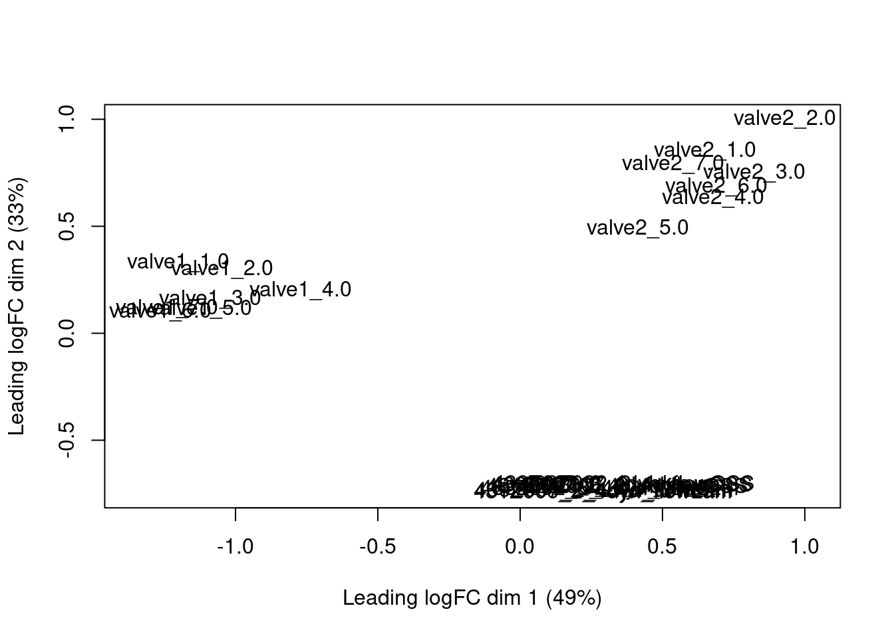
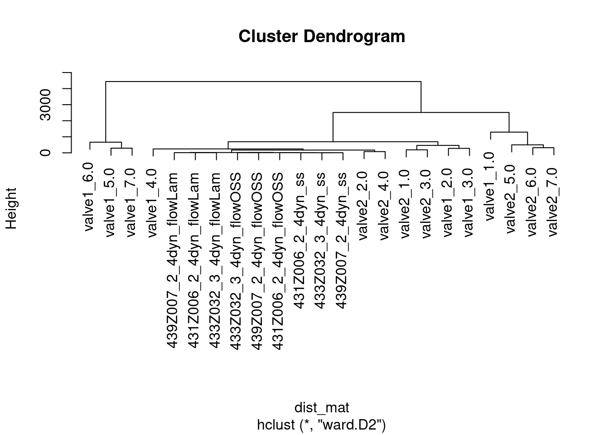
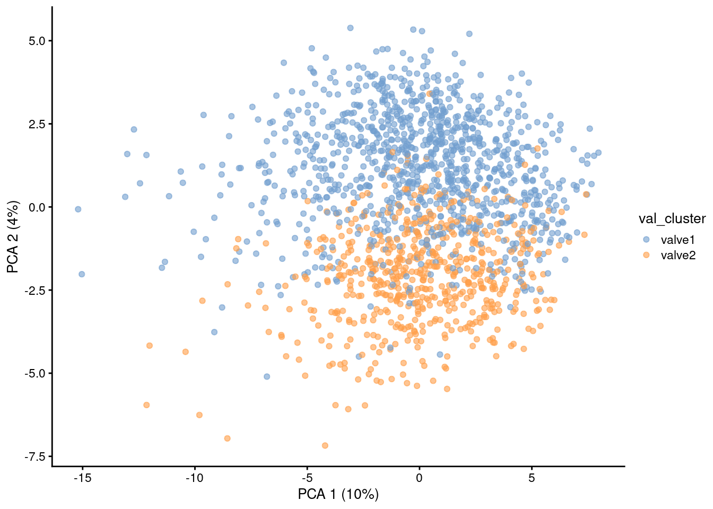

library(scran)
library(dplyr)
library(tidyr)
library(ggplot2)
library(scuttle)
library(DESeq2)
library(edgeR)
library(VennDiagram)
library(clustifyr)
library(RColorBrewer)
library(ComplexHeatmap)
library(scater)
library(patchwork)
library(SingleCellExperiment)
library(stringr)
library(gridExtra)valve subgroups
Valve subgroups
Explore expression pattern of valve sub types
Preamble
Data
Single cell data
sce <- readRDS(file.path("..", "data", "sce_all_metadata_genes.rds"))
sce_val <- sce[,sce$logcounts.scaled.pca.harmony.neighbors_connectivities.leiden_1res %in% c("8", "9")]
sce_val$val_cluster <- sce_val$logcounts.scaled.pca.harmony.neighbors_connectivities.leiden_1res |>
droplevels()
levels(sce_val$val_cluster) <- c("valve1", "valve2")Cluster plot
plotReducedDim(sce, dimred="umap",
colour_by="logcounts.scaled.pca.harmony.neighbors_connectivities.leiden_1res",
point_size = 0.8)Pseudobulk valve1 vs valve2
pb_val <- aggregateAcrossCells(sce_val,
id=colData(sce_val)[,c("val_cluster", "donor")],
use.assay.type = "counts")
pb_val <- pb_val[,pb_val$ncells >= 10]
print(table(pb_val$val_cluster))
valve1 valve2
7 7 # de
design <- model.matrix(~ donor + val_cluster, as.data.frame(colData(pb_val)))
dgl <- DGEList(counts(pb_val))
dgl <- calcNormFactors(dgl)
dgl <- estimateDisp(dgl, design)
fit <- glmQLFit(dgl, design)
de <- glmQLFTest(fit, coef="val_clustervalve2")
tt <- topTags(de, n = Inf)$table
tt$full_gene_name <- rownames(tt)
tt$gene_symbol <- gsub("^.*\\.","",rownames(tt))
saveRDS(tt, file.path("..", "out", "de", "valve2_vs_1.rds"))
write.csv(tt, file.path("..", "out", "de", "valve2_vs_1.csv"))Bulk expression data
fc_files <- list.files("../data/bulk-data-featurecounts", pattern="*.txt", full.names=TRUE)
fc_name <- list.files("../data/bulk-data-featurecounts", pattern="*.txt", full.names=FALSE)
fc_name <- gsub(".txt", "", fc_name)
fc_list <- lapply(fc_files, read.table, header = TRUE)
names(fc_list) <- fc_name
fc_list <- lapply(names(fc_list), function(fc_nam){
fc <- fc_list[[fc_nam]]
fc[,fc_nam] <- fc$matchCounts
fc <- fc |> select(-matchCounts)
fc
})
fc_tab <- fc_list |> purrr::reduce(full_join, by = "Identifier")
rownames(fc_tab) <- fc_tab$Identifier
fc_tab <- fc_tab |> select(-Identifier)
meta <- data_frame("cond" = gsub(".*dyn_", "", colnames(fc_tab)),
"sample" = gsub("_[0-9]{1,2}dyn.*", "", colnames(fc_tab)),
"strength" = gsub("^.*_[0-9]_|_[a-z].*$", "", colnames(fc_tab)))Warning: `data_frame()` was deprecated in tibble 1.1.0.
ℹ Please use `tibble()` instead.rownames(meta) <- colnames(fc_tab)Warning: Setting row names on a tibble is deprecated.# to get rowData
bulk_expr <- read.csv(file.path("..", "data", "4Donors_FPKM_Laminar_4-over-Oscillatory_4.csv"))
bulk_expr <- bulk_expr[-1,]
count_nam <- grep(".*FPKM",colnames(bulk_expr), value = T)
row_dat_nam <- colnames(bulk_expr)[!colnames(bulk_expr) %in% c("X", "Cluster", count_nam)]
row_dat <- bulk_expr[,c("gene_id", "gene_name")]
rownames(row_dat) <- row_dat$gene_id
row_dat <- row_dat[rownames(fc_tab),]
# Generate summarized experiment
bulk <- SummarizedExperiment(assays=list(counts=as.matrix(fc_tab)),
colData=meta, rowData = row_dat)
dim(bulk)[1] 21493 24rownames(bulk) <- paste0(rowData(bulk)$gene_id, ".", rowData(bulk)$gene_name)
#Filter genes
bulk <- bulk[rowSums(assay(bulk, "counts")) > 5, ]
dim(bulk)[1] 16779 24#Filter sample
bulk <- bulk[, !bulk$sample %in% "440z009_2"]
bulk <- bulk[, !bulk$strength %in% "04dyn"]
#DESEQ2 dataset
dds <- DESeq2::DESeqDataSet(bulk, design = ~ sample + cond)Warning in DESeq2::DESeqDataSet(bulk, design = ~sample + cond): some variables
in design formula are characters, converting to factorsdds <- estimateSizeFactors(dds)
vsd <- DESeq2::vst(dds, blind = TRUE)
#DE bulk
DE_bulk <- read.csv(file.path("..", "data","result--Laminar_4--over--Static_4.csv"))
dds <- DESeq(dds)using pre-existing size factorsestimating dispersionsgene-wise dispersion estimatesmean-dispersion relationshipfinal dispersion estimatesfitting model and testingcont <- c(0,0,0,1,1)
res_de <- results(dds, contrast = cont)
res_de <- res_de[order(res_de$padj), ]Correlation clustifyr
overlap <- intersect(rownames(sce_val), rownames(vsd))
sce_val <- sce_val[overlap,]
vsd <- vsd[overlap,]
tt_overlap <- tt[overlap,]
top_ordered <- tt_overlap[order(tt_overlap$FDR),]
top <- rownames(top_ordered)[1:100]
res <- clustify(
input = as.matrix(logcounts(sce_val)),
metadata = data.frame(colData(sce_val)),
cluster_col = "val_cluster",
ref_mat = assay(vsd),
query_genes = top
)using # of genes: 100similarity computation completed, matrix of 2 x 9, preparing outputp <- plot_cor_heatmap(cor_mat = res, col = rev(hcl.colors(51, "Reds")))
p
Pb MDS
# | label: pb mds
#pseudo_bulk
pb_val <- aggregateAcrossCells(sce_val,
id=colData(sce_val)[,c("val_cluster", "donor")],
use.assay.type = "logcounts")
colnames(pb_val) <- paste0(pb_val$val_cluster, "_", pb_val$donor)
pb_val_sel <- pb_val[top,]
vsd_sel <- vsd[top,]
com <- cbind(assay(vsd_sel), logcounts(pb_val_sel))
d <- DGEList(com, remove.zeros = TRUE)
mds <- plotMDS.DGEList(d, top = 100)
dist_mat <- dist(t(com))
hclust_avg <- hclust(dist_mat, method = 'ward.D2')
plot(hclust_avg)
Heatmap top DE genes v1v2
top <- rownames(top_ordered)[1:100]
top <- top[!top %in% "ENSG00000139329.LUM"]
vsd_sel <- vsd[top,]
cd <- data.frame("cond" = vsd_sel$cond)
rownames(cd) <- colnames(vsd_sel)
hm <- pheatmap(assay(vsd_sel),
main = "Top DE genes valve2 vs valve1", fontsize = 6,
col = rev(hcl.colors(51, "RdBu")),
scale = "row",
show_colnames = FALSE,
show_rownames = FALSE,
cluster_cols = TRUE,
annotation_col = cd)
hm
Top DE genes bulk
Heatmap
res_sel <- res_de[which(res_de$padj < 0.01),]
res_down <- res_sel[order(res_sel$stat),]
res_up <- res_sel[order(res_sel$stat, decreasing = T),]
top_bulk <- c(rownames(res_up)[1:200], rownames(res_down)[1:200])
top_bulk <- top_bulk[top_bulk %in% rownames(pb_val)]
sub <- logcounts(pb_val)[top_bulk,]
sub <- sub[rowSums(sub) > 0,]
cd <- data.frame("cond" = pb_val$val_cluster,
"donor" = pb_val$donor)
rownames(cd) <- colnames(pb_val)
# Specify colors
ann_colors = list(
cond = c("valve1" = "#849db1", "valve2" = "#ef6f6a"),
donor = c("1.0" = "#4E79A7", "2.0" = "#F28E2B",
"3.0" = "#E15759", "4.0" = "#76B7B2",
"5.0" = "#59A14F", "6.0" = "#EDC948",
"7.0" = "#B07AA1")
)
hm <- pheatmap(as.matrix(sub),
main = "Top flow associated DE genes", fontsize = 6,
col = rev(hcl.colors(50, "RdBu")),
scale = "row",
show_colnames = FALSE,
show_rownames = FALSE,
cluster_cols = TRUE,
cluster_rows = TRUE,
annotation_colors = ann_colors,
show_row_dend = FALSE,
annotation_col = cd)
hm
Heatmap patient subgroups
pb_val1 <- pb_val[,pb_val$donor %in% c("6.0", "5.0", "7.0")]
sub1 <- logcounts(pb_val1)[top_bulk,]
sub1 <- sub1[rowSums(sub1) > 0,]
cd <- data.frame("cond" = pb_val1$val_cluster,
"donor" = pb_val1$donor)
rownames(cd) <- colnames(pb_val1)
hm <- pheatmap(as.matrix(sub1),
main = "Top flow associated DE genes", fontsize = 6,
col = rev(hcl.colors(50, "RdBu")),
scale = "row",
show_colnames = FALSE,
show_rownames = FALSE,
cluster_cols = TRUE,
annotation_colors = ann_colors,
show_row_dend = FALSE,
annotation_col = cd)
hm
pb_val2 <- pb_val[,pb_val$donor %in% c("2.0", "4.0")]
sub2 <- logcounts(pb_val2)[top_bulk,]
sub2 <- sub2[rowSums(sub2) > 0,]
cd <- data.frame("cond" = pb_val2$val_cluster,
"donor" = pb_val2$donor)
rownames(cd) <- colnames(pb_val2)
hm <- pheatmap(as.matrix(sub2),
main = "Top flow associated DE genes", fontsize = 6,
col = rev(hcl.colors(50, "RdBu")),
scale = "row",
show_colnames = FALSE,
show_rownames = FALSE,
cluster_cols = TRUE,
annotation_colors = ann_colors,
show_row_dend = FALSE,
annotation_col = cd)
hm
Gene overlap
bulk <- res_de[overlap,]
bulk <- bulk[which(bulk$padj < 0.01),]
sc <- tt_overlap[tt_overlap$FDR < 0.01,]
myCol <- brewer.pal(3, "Pastel2")
# Chart
venn.diagram(
x = list(bulk = rownames(bulk), sc = rownames(sc)),
category.names = c("Flow" , "valve1/valve2"),
filename = '../out/plots/venn_bulk_sc.png',
output=T,
# Output features
imagetype="png" ,
height = 480 ,
width = 480 ,
resolution = 300,
compression = "lzw",
# Circles
lwd = 2,
lty = 'blank',
fill = myCol[1:2],
# Numbers
cex = .6,
fontface = "bold",
fontfamily = "sans",
# Set names
cat.cex = 0.6,
cat.fontface = "bold",
cat.default.pos = "outer",
cat.pos = c(-15, 5),
cat.fontfamily = "sans",
#rotation = 1
)[1] 1PCA
sce_val <- runPCA(sce_val, subset_row = top_bulk)
plotReducedDim(sce_val, dimred="PCA", colour_by="val_cluster")
pb_val <- runPCA(pb_val, subset_row = top_bulk)Warning in check_numbers(k = k, nu = nu, nv = nv, limit = min(dim(x)) - : more
singular values/vectors requested than availableWarning in (function (A, nv = 5, nu = nv, maxit = 1000, work = nv + 7, reorth =
TRUE, : You're computing too large a percentage of total singular values, use a
standard svd instead.plotReducedDim(pb_val, dimred="PCA", colour_by="val_cluster")Dimplots
gene_list <- c("ALCAM","CD24","ITGA9","CD9","CAV1","SNCG","NEO1","ADAMTS6",
"ADAMTS1","SEMA3D","GJA1","CLDN11","ANGPT2","CLDN5","ADM",
"GJA4","SAT1","ID3","SCG3","NR2F1","APOD")
rowData(sce_val)$gene_short <- rowData(sce_val)$Symbol
dup <- which(duplicated(rowData(sce_val)$gene_short))
rowData(sce_val)$gene_short[dup] <- rownames(sce_val)[dup]
rownames(sce_val) <- rowData(sce_val)$gene_short
dim_list <- lapply(gene_list, function(gene_nam){
p <- plotReducedDim(sce_val, dimred="umap", colour_by=gene_nam,
point_size = 0.8) +
ggtitle(gene_nam)
})
wrap_plots(dim_list, ncol = 3) Violinplots
plotExpression(sce_val, features=gene_list,
x="val_cluster", colour_by="val_cluster", ncol = 3)